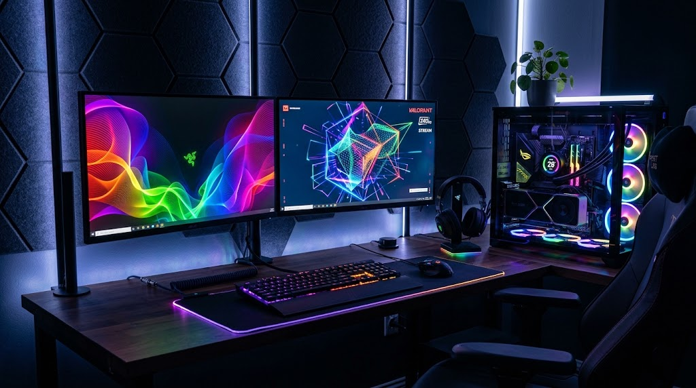
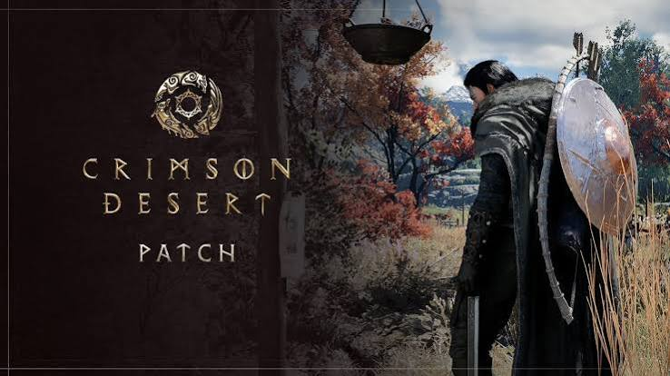

Novidades do mundo dos games

O mundo dos games está sempre recebendo novidades, com novos lançamentos, anúncios e atualizações que movimentam a comunidade de jogadores.
As principais notícias do mundo dos games

O mundo dos games está sempre recebendo novidades, com novos lançamentos, anúncios e atualizações que movimentam a comunidade de jogadores.

Crimson Desert é um jogo de ação e aventura que apresenta um grande mundo aberto, combates intensos e uma história ambientada em um universo de fantasia medieval.
GTA VI é um dos jogos mais aguardados dos últimos anos. O título promete uma grande experiência de mundo aberto, com novos personagens, locais e uma história ambientada no estado fictício de Leonida.